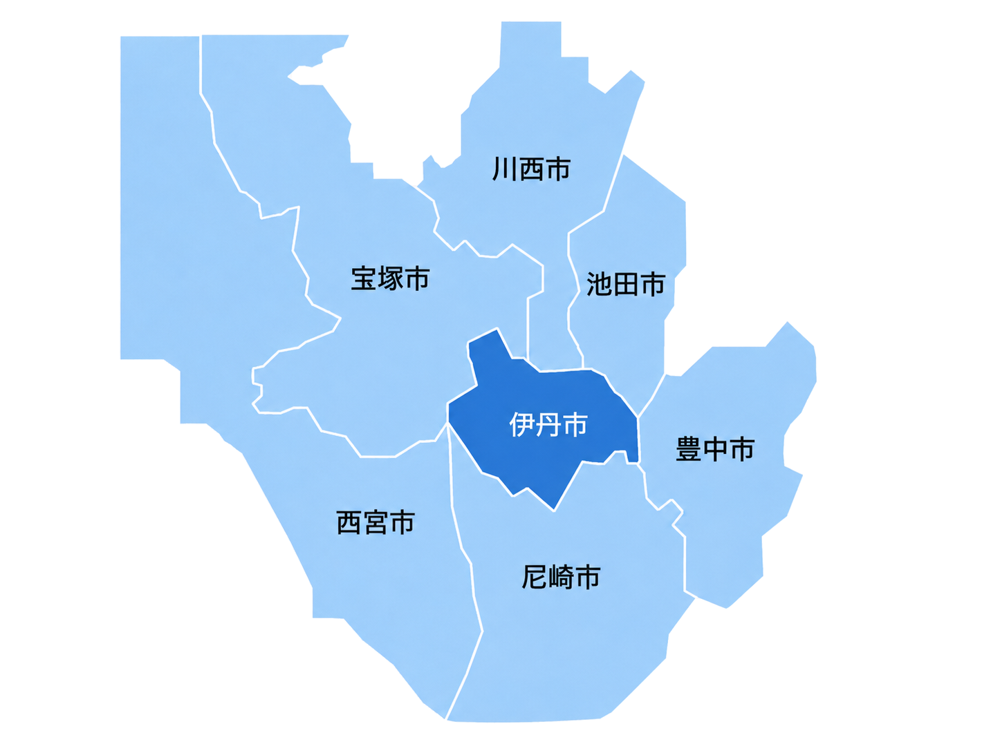

マンション・アパート
共用部清掃
エントランス・廊下・階段・駐輪場などの共用部を清掃し、快適な住環境を保ちます。
マンション・アパート・オフィス・店舗・一般住宅など、さまざまな清掃に対応しております。丁寧な作業と誠実な対応で、快適な環境づくりをお手伝いいたします。
エントランス・廊下・階段・駐輪場などの共用部を清掃し、快適な住環境を保ちます。

オフィス・店舗・施設など、業種に応じた清掃で、清潔で快適な空間を保ちます。

キッチン・浴室・トイレなど、ご家庭の気になる汚れをプロの技術で丁寧に清掃します。

ご家庭用・業務用エアコンの内部洗浄で、清潔な空気環境を実現します。

賃貸物件の退去後や入居前のクリーニングで、次の入居者を気持ちよく迎えられる空間に仕上げます。

床のワックス清掃やガラス清掃で、建物の美観を保ちます。
伊丹市を中心に、尼崎市・西宮市・宝塚市・川西市など阪神間および周辺地域に対応しております。
その他の地域につきましても、まずはお気軽にご相談ください。

清掃料金は、作業内容・広さ・作業頻度・現場の状況などによって異なります。
※現在、新規の清掃依頼の受付を一時休止しております。